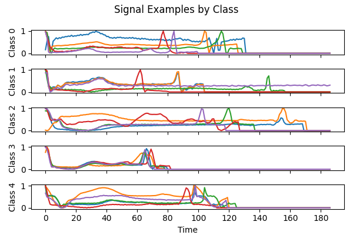
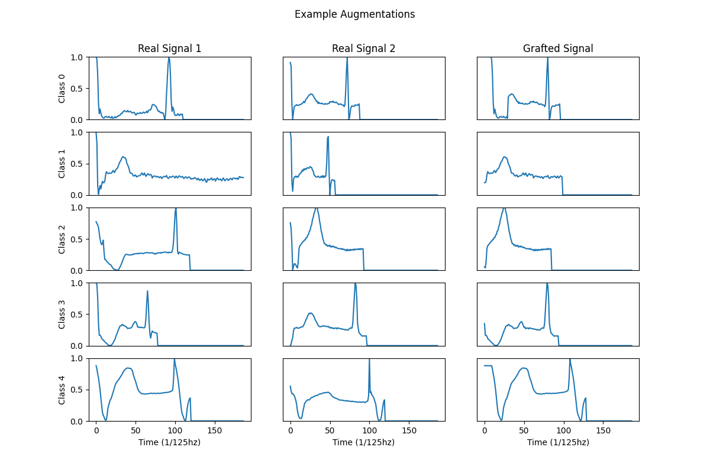
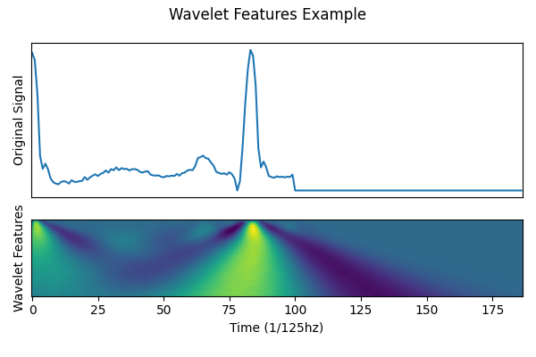

Task I: Data Processing¶
Exploratory Data Analysis¶
Code: https://github.com/A-Telfer/telfer-ecg-heartbeat-categorization-task/blob/master/notebooks/1.0-telfer-exploratory-data-analysis.ipynb
In the exploratory data analysis notebook we identified the composition of the dataset in terms of data size, types, and range. We found that the target classes were very imbalanced (Table 1). By describing the data we found that the signals were normalized between [0, 1] and were followed by trailing zeros to pad shorter signals.
| Class Label | Samples | Ratio |
|---|---|---|
| 0 | 72471 | 0.828 |
| 1 | 2223 | 0.025 |
| 2 | 5788 | 0.066 |
| 3 | 641 | 0.007 |
| 4 | 6431 | 0.073 |
Table 1: Sample class distribution in the training dataset.
We visualized sample signals from each class, noting several aspects that signals differed such as peak locations, mean amplitude, and signal length.

Figure 1: Sample Features from each class. For example, Class 3 and Class 4 show indications of differences in peak location and signal length.
Data Augmentation¶
Code: https://github.com/A-Telfer/telfer-ecg-heartbeat-categorization-task/blob/master/src/data/make_dataset.py
We applied two augmentation techniques to the training dataset:
Signal Grafting: two signals from the same class were sampled and merged. The goal of this method was to preserve the properties of each class while generating new hybrid examples which were typically realistic.
def graft_signals(signal1, signal2): """Combines two signals at a random point to generate a new signal""" split_point = random.randint(0, len(signal1) - 1) return np.concatenate([signal1[:split_point], signal2[split_point:]])
Temporal Shift: signals were shifted $t \in[-5,5]$ along the time axis. The goal of this augmentation was to prevent the overfitting of training examples by specific neural circuits in the model, and also help learn temporal relationships between input neurons (we used a basic linear model and not a convolutional model that would better preserve these relationships). Any leading or trailing nan values this introduced were filled with the next or last non-nan value respectively.
def temporal_shift_signal(signal, max_shift=10): """Applies a random shift along the x-axis""" s = pd.Series(signal) d = random.randint(-max_shift, max_shift) s = s.shift(d).ffill().bfill() return s.values
Adding small signals is another popular method for data augmentation, however, after observing the signals in Figure 1 we decided adding high-frequency noise could obscure potential useful features. For example, samples from Class 1 appeared to have more high-frequency noise than Class 3, so adding more noise could mask these differences.
To mitigate the class imbalances during training, we generated a fixed number of new signals per class using the Signal Grafting method described above (followed by a Temporal Shift). To perform hyper-parameter analysis we generated a smaller set of 10,000 examples per class (upsampling some classes, downsampling others) which allowed for quicker training.

Figure 2: Demonstration of grafting and temporal shift. Not all generated signals will be different from the originals if the split occurs after the signals end (e.g. during the trailing zeros).
Feature Engineering¶
Code: https://github.com/A-Telfer/telfer-ecg-heartbeat-categorization-task/blob/master/src/features/build_features.py
Rather than hand-crafted features, we opted for a wavelet transform (Mexican Hat Wavelet using the pywt package) to encode joint temporal and frequency domain features. While wavelet transforms are often used in ECG signals that haven’t been processed to separate heartbeats, we can still observe some wave-like features in the signal examples.

Figure 3: Example wavelet features extracted from a signal.
Joint time-frequency domain features are advantageous as they can capture frequency and temporal information (e.g. Figure 3). One downside of using joint time-frequency domain features is that they are not intuitive and therefore not very suitable when explainability is important. Another concern is that they can greatly expand the feature space. Simpler hand-crafted features may be preferable in some contexts for explainability and speed.
A simpler approach may have been to allow the classification model to learn its own features directly from the signal. For a longer project, contrastive learning may have been a promising approach to generate features that emphasize differences between classes.
Missing Data¶
The original dataset did not contain any NaN values. The original dataset however appears to have filled missing values with 0 (e.g. trailing zeros after the signal). Because the signal appears normalized between [0,1]. Due to this normalization, imputing using zeros indicates that the missing values are equivalent to the lowest point of the signal.
Missing data was introduced by our temporal shift augmentation. Because these values occurred at the beginning and end of each signal, we opted to fill them using the next or previous value respectively.
Strategies we may have used in other situations:
If missing data occurred in the middle of the signal, we could have linearly interpolated it.
If the dataset was very sparse, we may have created a new dummy field to indicate missing values in the original dataset and then filled the missing values with some placeholder. Or we could have included the time of each present value as a separate feature.
The main risk of imputing values is that they can distort the dataset and obscure the real data. For example, with time series data, imputing missing values using global averages will obscure temporal features such as trends.